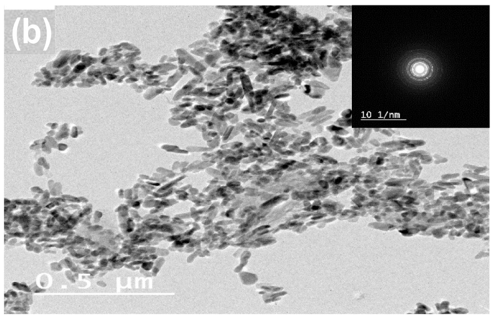
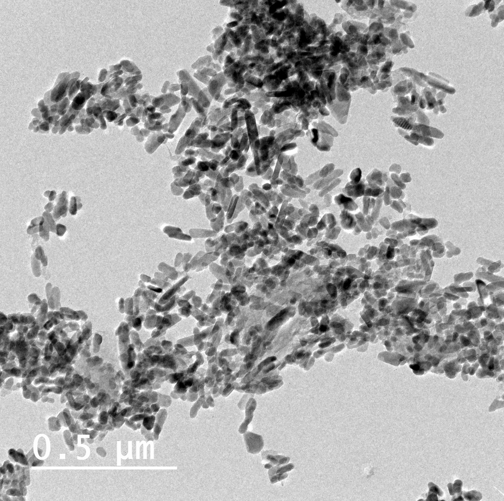
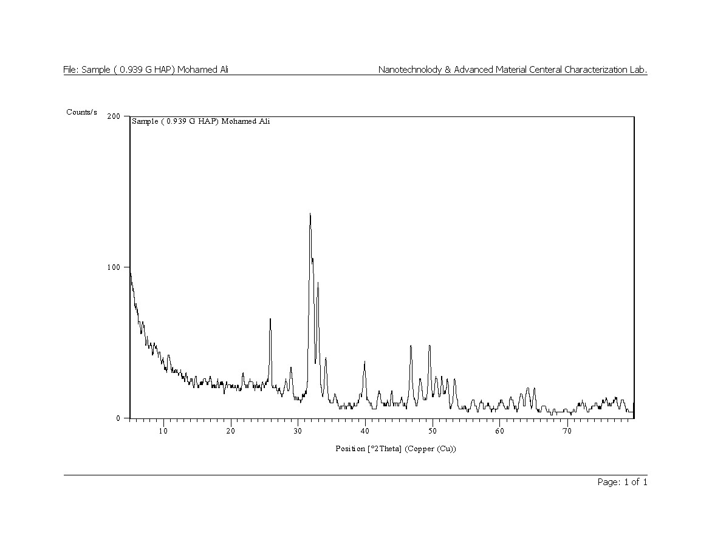
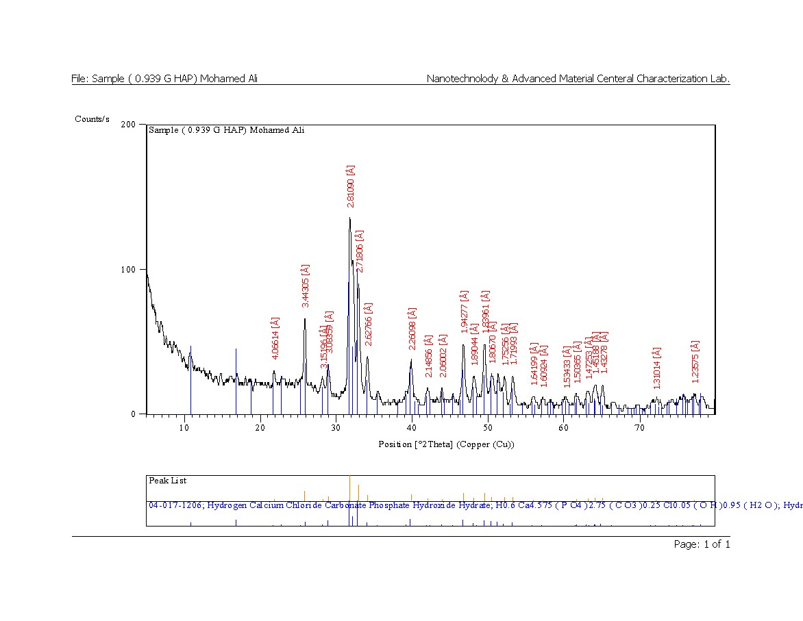
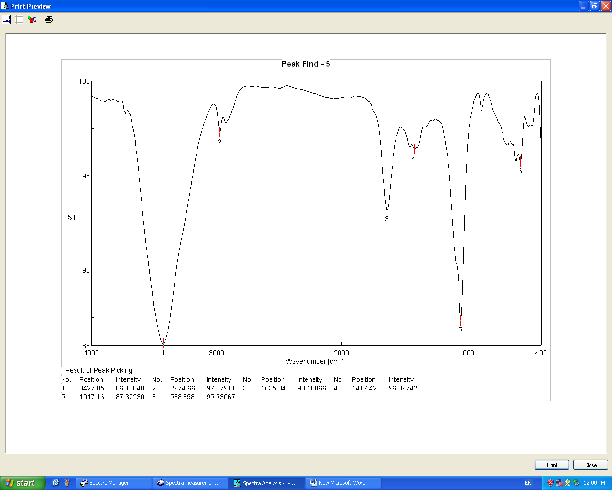
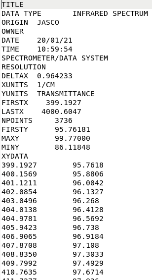

{kind=link}

A case for intentional exclusion of a legitimate author from the authorship of a scientific publication is being presented. This case is being presented in hope that it will be instrumental in attempts to restore justice.
The author in question is Mohamed El-Qelish (MQ) who was, as we believe the data on this page demonstrates, illegitimately revoked his right to the authorship in the scientific work he rightly carried out. Here, we present a point-by-point evidence in support of his authentic contribution.
Based on the evidence in this document, we believe that MQ was unjustly deprived of his right to be a legitimate co-author of the manuscript D3.
Below we provide some evidence as to show that D1/D2 manuscripts contain largely the work associated with D3.
Fig. 2b (png) in D3 (p. 5 of the document) is contained unmodified in Fig. 2b of D1 (p. 71, bottom-right panel) and Fig. S2 of D2 (p. 60, bottom-right panel). Please, note that the figure attached to this document is original copy taken from the microscope directly, while those presented as publication figures in the documents D1, D2, and D3 are super-position of two images: the original and a technical satellite picture (black square in the panel). Thus, we provide an original digital image of the figure.
Fig. 6 in D3 (p. 10) is identical to Fig. 5 in D1 (p. 78) and to Fig. 4 in D2 (p. 46), in that it represents the same data (changes in the graph decorations can be noticed though). All panels of the figure are replicated in all three documents.
Sec. 4.5 of D3 (p. 9) contains almost identical text slightly modified from the original contributions in Sec. 3.3.1 of D1 (p. 41) and in Sec 3.2.1 of D2 (p. 25).
Judged by the evidence so far, we can conclude that D1, D2, and D3 submissions contain identical research materials. Thus, it is at least strange that the author list has undergone a significant change. We should also conclude that any work built on a previous work must at least acknowledge the authors of that previous work, henceforth, the authors, whose work is included into subsequent analysis, should not be removed, but additional authors are possible (when new analyses are introduced, for example). Next, we will provide evidence demonstrating that MQ indeed had an original research contribution to D1, D2, and hence D3 works.
In this section, we provide the raw data coming directly from the experimental machines. These data are uniquely associated with the data reported in D3, yet were not provided with the D3 submission files (basic raw data are usually not part of the journal submissions).
Documents D1 & D2 represent authentic preprint submissions to scientific journals with MQ as a legitimate co-author. D1 & D2 were rejected by the respective journals. However, D3 was accepted and published with much of the same research work initially submitted as part of D1 & D2 and carried out by MQ. Yet D3 excludes MQ from the authorship. Below, we identify such pieces of the original work that was wrongfully taken from MQ without proper authorship attribution.
Ahmed Tawfik (AT) asks MQ by email to submit the manuscript and suggests two journals. One of them is clearly identified as Journal of Envrionmental Management (D2). Additionally, the PDF copy of the email contains a list of attachments corresponding to the original data of the manuscript.
This is evident from the 3rd page of D2, where affiliations of the authors are stated. Two email addresses for MQ are provided as a contact point.
The cover letter is on page 4 of the original submission of D2.
Fig. 2b as printed in manuscript D3 is shown below. Note that the published figure was modified as to contain the black box in the upper-right corner. Note also that the aspect ratio of the figure has been changed for the publication.

Fig. 2b in the original digital format provided by MQ. Note this figure does not contain the black box and retains the 1:1 aspect ratio which indicates its originality.

Next, we provide the original (EDX) machine readout for the spectrum shown in Fig. 2c of D3 (p. 5). This readout was not in the submission of D3, yet the graph was taken out, while the other data of the readout indicate the original source of the figure. This data sheet was provided directly by MQ and can be downloaded here.
Original data as generated by the machine for the XRD experiments:




In these figures, we see original data as generated by the machine associated software. Note the user and laboratory name indicating the original data source. These data were provided by MQ and not available as submission documents for D3..
Fig. 2e of D3 shows the FTIR experiment. The corresponding, machine-generated graph of the experiment was provided by MQ:

Raw data for this experiment were also provided by MQ (full file is here):

The above file again show unique print-out in the header section corresponding to machine-generated raw files. The header does not immediately contain the data point of the graph, but rather some technical information related to the experiment. These files were not available as the D3 submision.